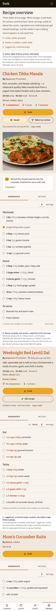
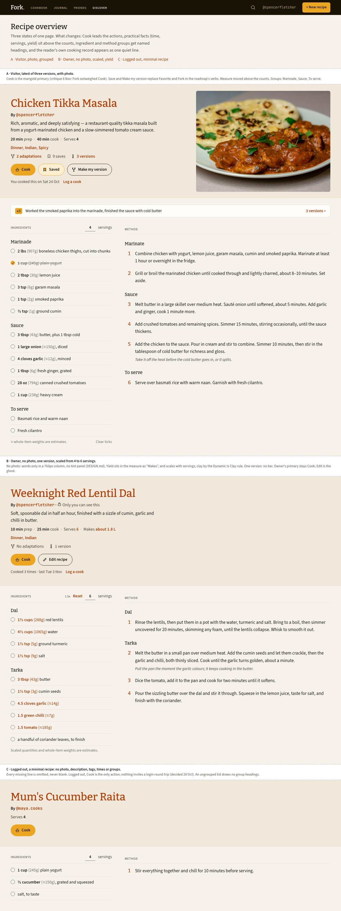
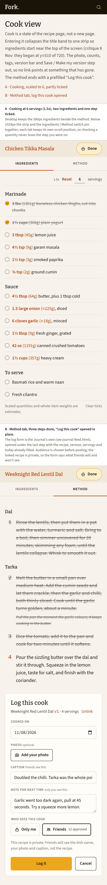
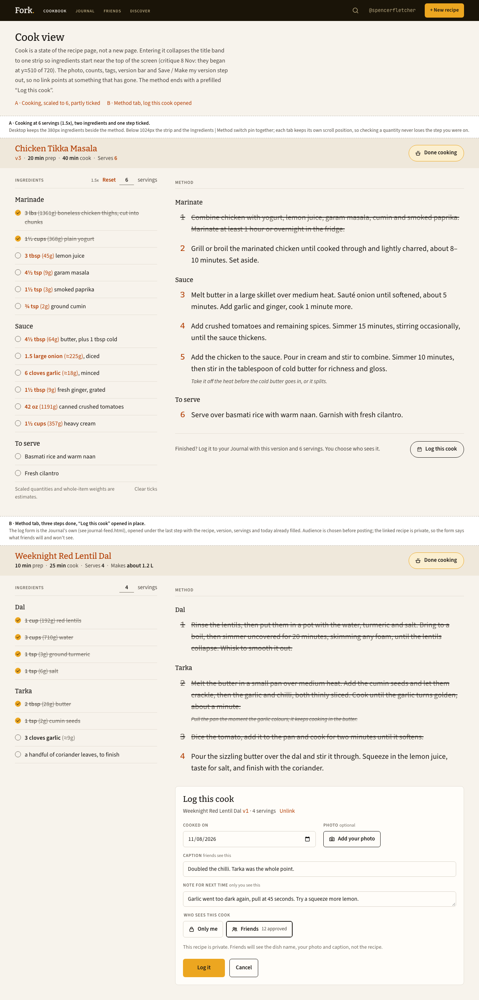
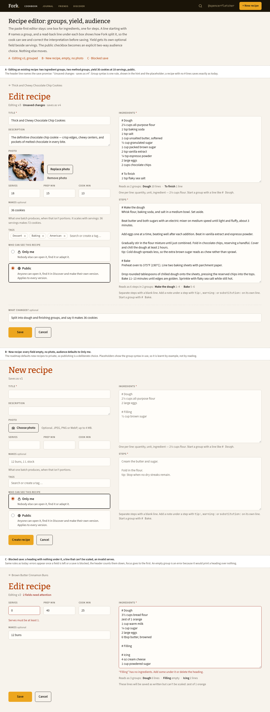
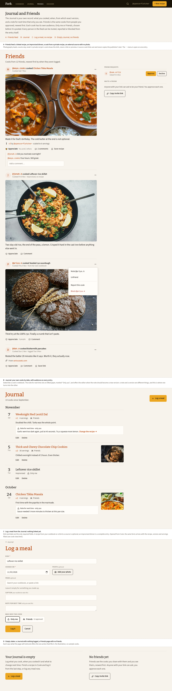

Make Fork better with your own cooking judgment
Pick one useful session: test realistic recipe text, settle the Insert interaction, or build a small standalone experiment. Everything needed to read this gallery is local.
Your work materials
- Start here: recommended sessions and deliverables
- Editable decision and observation worksheet
- Synthetic recipe fixtures and expected checks
- Standalone Insert-toolbar coding exercise
- Local commands, preparation checks and limits
Open the Markdown files in your code editor to fill them in. The gallery requires no server or login; the full application may still require local services.
Recipe overview
Check whether the photograph, practical details and Cook action lead in the right order.




Cook view
Check what you can read immediately and how you would return to an ingredient without losing your step.




Recipe editor
This board predates live heading styling and the Insert toolbar. Use it as a baseline, not a frozen design.



Journal and Friends
Use your real dinner records to judge the density and required effort. Some pictured social actions are later slices.



Research and roadmap snapshots
Snapshots captured on 9 November. Online citations require a connection; the findings and decisions are included locally. Nested repository links in these source documents retain their original locations.